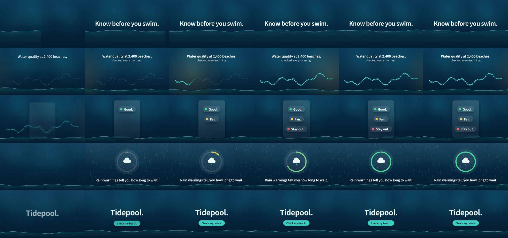

charlie947/motion-graphics-skills: test run, 2026-10-11
The same brief for every skill: a 15-second promo for a made-up app, five fixed lines of on-screen copy, 1920 x 1080 at 30 frames per second. Claude Code (Claude Opus 5.5) made it with the skill in a throwaway sandbox with no API keys for video, image or voice models. 7.0 minutes; sound: yes. All results · The brief · How it is checked
The four checks
| Renders to a playable file | pass | H.264 |
|---|---|---|
| Length, size and frame rate as asked | pass | 15.0 s, 1920x1080, 30.0 fps |
| All five lines readable | pass | 5 of 5 |
| The picture moves | pass | 28% of sampled frame pairs held still |
Frames sampled twice a second

How it was made (the session's closing message)
I made the 15-second Tidepool promo with the installed `launch-video` skill. ffprobe reports H.264 at 1920×1080, 30 fps, exactly 15.0 seconds long. **What's in it:** the five lines of copy appear in order, word for word, with nothing else added. The background is deep blue water with a moving teal wave line. 1. 0–3s: "Know before you swim." rises in over the wave. 2. 3–6.2s: "Water quality at 2,400 beaches, checked every morning." A line of dots lights up as a sunrise glow sweeps across. 3. 6.2–9.2s: "Good." "Fair." "Stay out." land one by one as green, amber and red labels on a frosted panel. 4. 9.2–12s: "Rain warnings tell you how long to wait." Rain falls while a ring timer fills. The ring has no digits, so it doesn't suggest a wait time the brief doesn't give. 5. 12–15s: "Tidepool." with a "Check my beach." button, held for about 2.5 seconds once fully in. I checked still frames from every scene for cut-off, overlapping or extra text. That check caught the button sitting too close to the name and then on the wave line, and both are fixed in the final file. **Where I changed the skill's workflow:** - **Length:** the skill's default is 30–45 seconds in 7 scenes. I followed the brief's 15 seconds and 5 lines instead. - **No questions:** I skipped the skill's questions and its wait for approval of the scene plan. There were no brand colours, fonts or logo, and the brief leaves the look to me. So `brand.md` and `MOTION.md` record the colours and font I chose, and the video only shows the name as plain type, with no logo. - **Export:** the skill suggests installing a tool called HyperFrames, but says to ask first. Instead I used Chromium and ffmpeg, which were already here, through a small script (`render.mjs`) that draws and captures every frame exactly. - **One file only:** the skill also suggests a second, 4:5 version. I didn't make it because the brief asks for one file. - **Sound:** the video has a silent audio track so it uploads cleanly, and no music. The project is in `~/work/project`: `index.html` (the animation), `render.mjs`, `beats.md` (the scene plan), `brand.md`, `MOTION.md`, `CLAUDE.md` and the check frames in `checks/`. DELIVERABLE: ~/work/output/video.mp4